Hi, Rose here.
These are some data visualizations I've made recently.
Start »
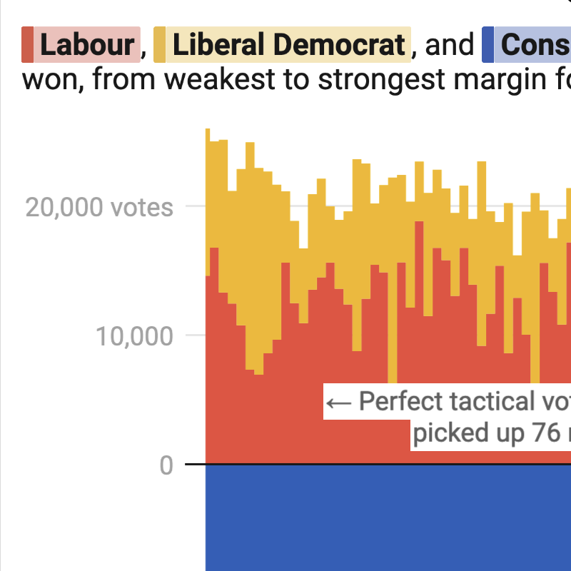
Some Tories still won through a split opposition
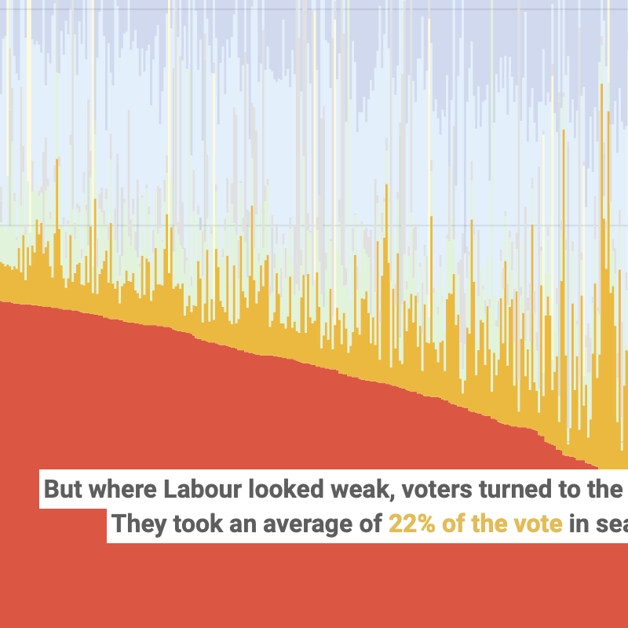
How the tactical vote came through
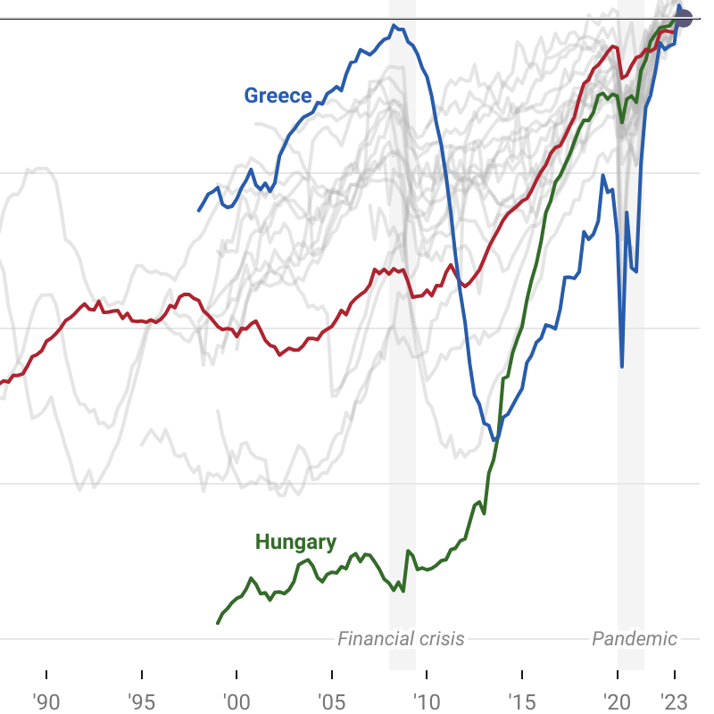
OECD employment rates have never been higher
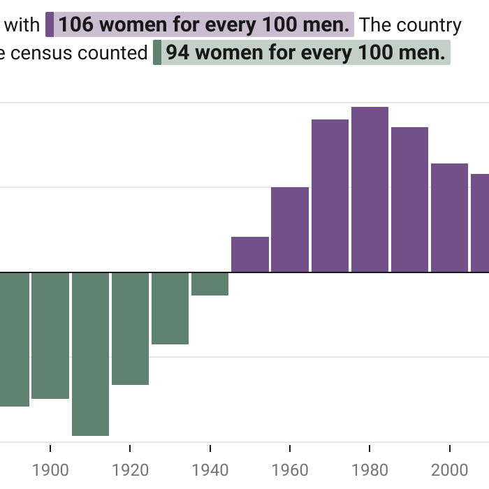
Since 1950, U.S. women have been the majority
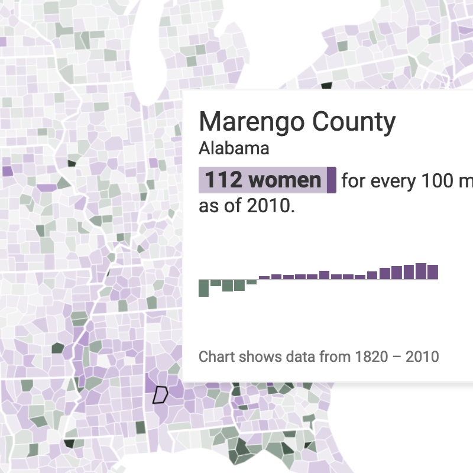
Men outnumber women in the West, in prisons, and in resource extraction
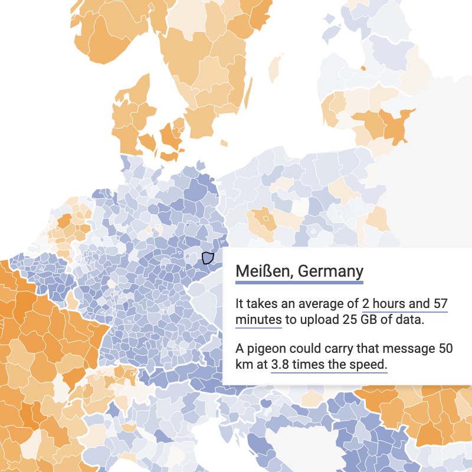
Germany's highest bandwidth is a pigeon's wingspan
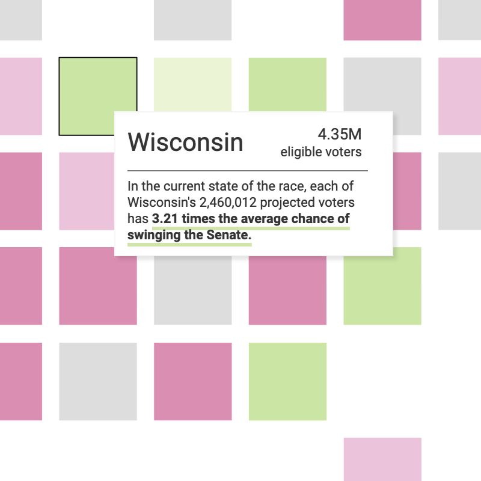
Will your vote swing the Senate?
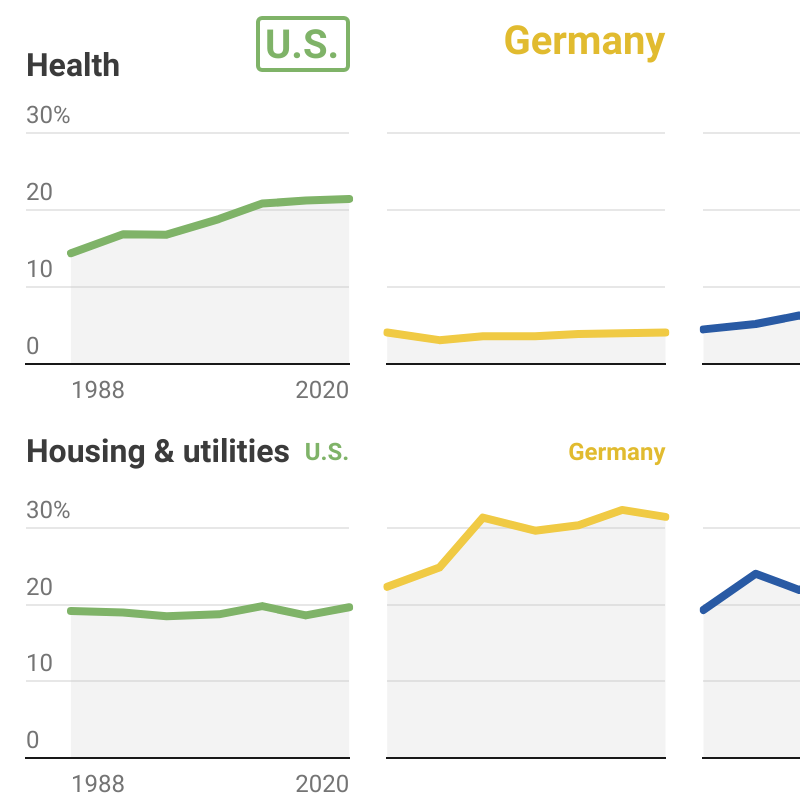
Where a household budget goes in different countries
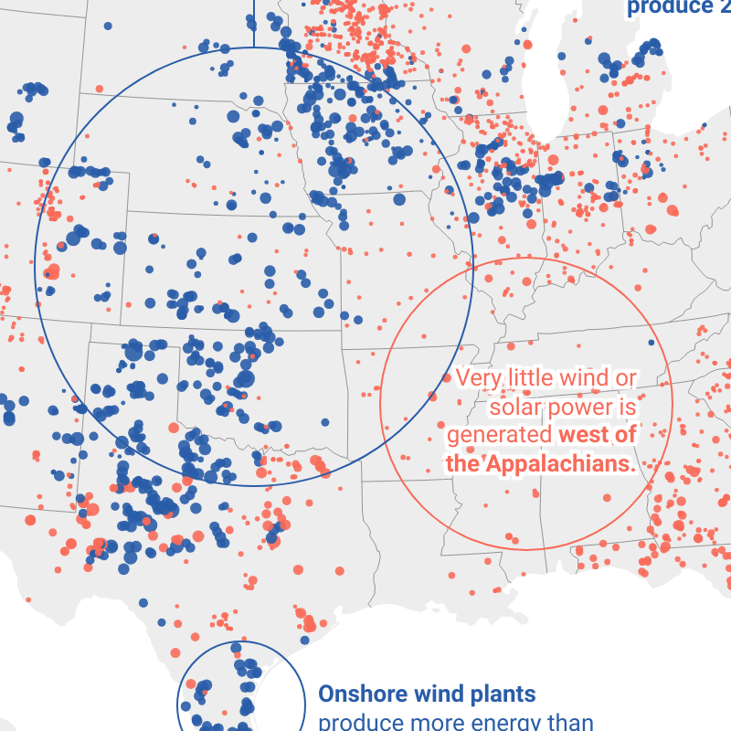
In the U.S., renewable power is a regional industry
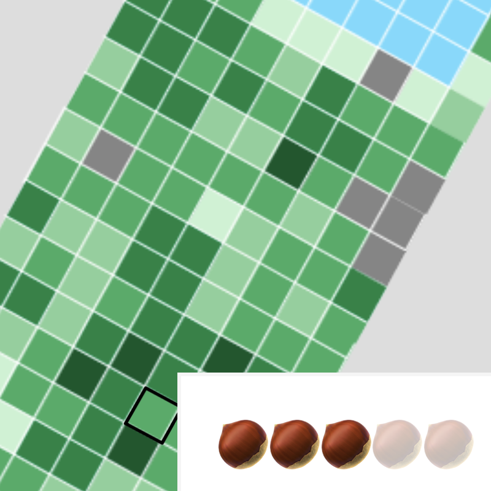
The 2018 Central Park Squirrel Census
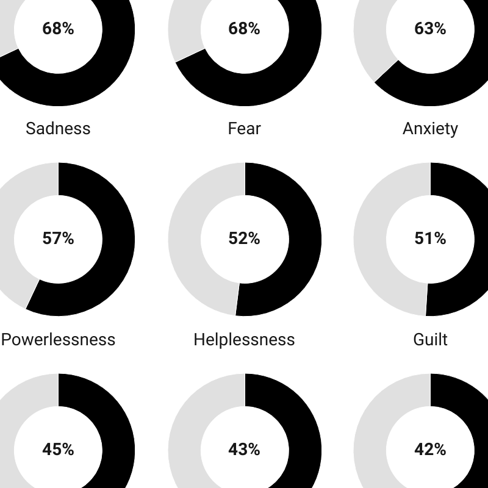
The climate crisis inside our heads
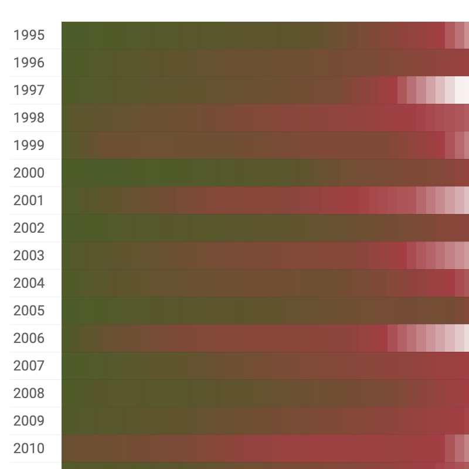
A heatmap for the cool fall days
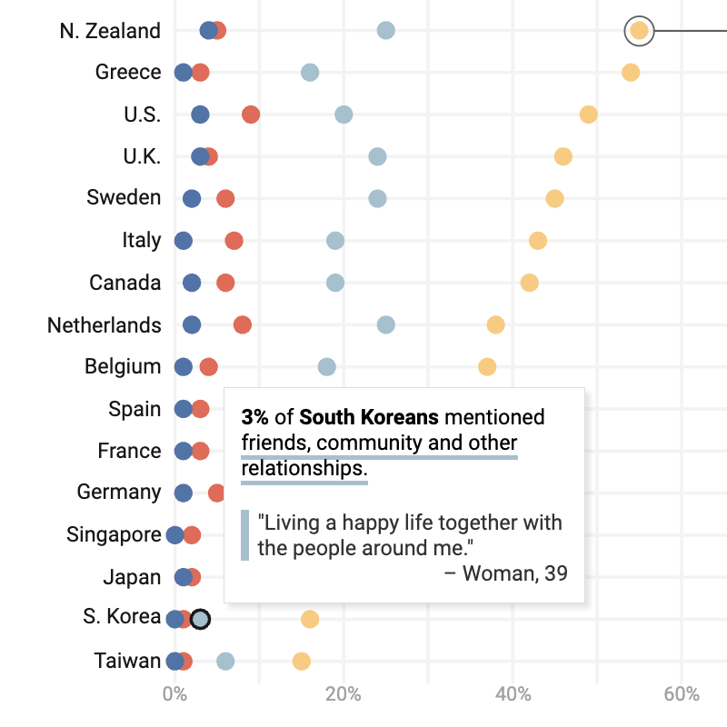
Relationships make life meaningful
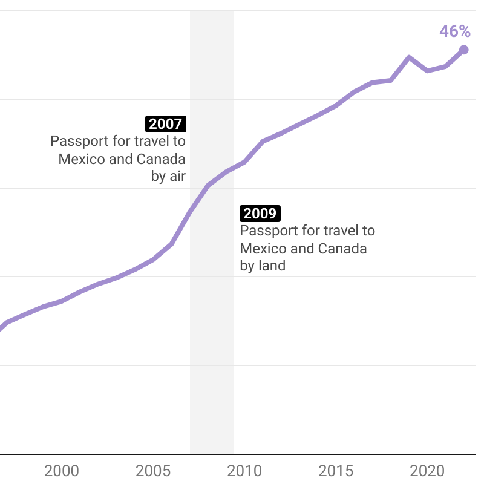
In 30 years, Americans with passports went from marginal to mainstream
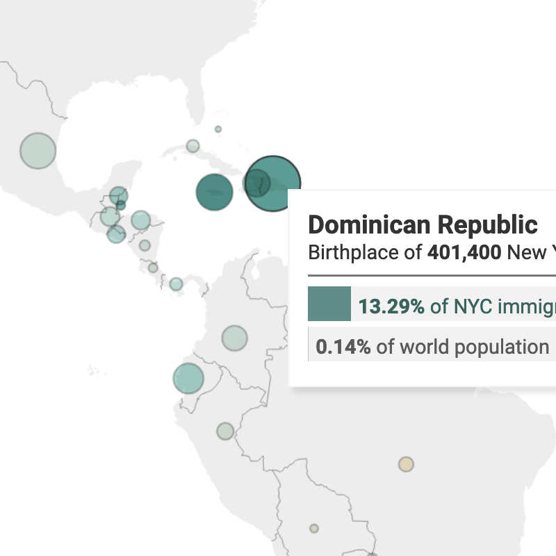
An unusually shaped map of New York